2025 | CLIENT BRIEF
Metro Mission
Negative behavior on public transport can often be addressed early in life by building better habits from a young age. This project explores how a gamified learning experience can encourage users to develop positive habits and foster greater empathy and consideration for others in shared public spaces.
Group, Academic Project
8 Weeks
Figma, Illustrator
Mobile Game, Collectible Merch
CHALLENGE
Auckland Transport wanted us to help people feel and be safer when using Public Transport in Auckland.
APPROACH
We developed a choice-based mobile game that helped players explore how their choices effect other passengers, teaching them nicely rather than lecturing basically.
RESEARCH QUESTION
How can we encourage positive and respectful public transport journeys, while still letting it be fun?
PROCESS
Research & Insights
user surveys regarding publics current understanding of what 'positive public etiquette is' and what they expect and all.
we found that most people thought teens were the problem lol
KEY INSIGHTS
add a ul here :D
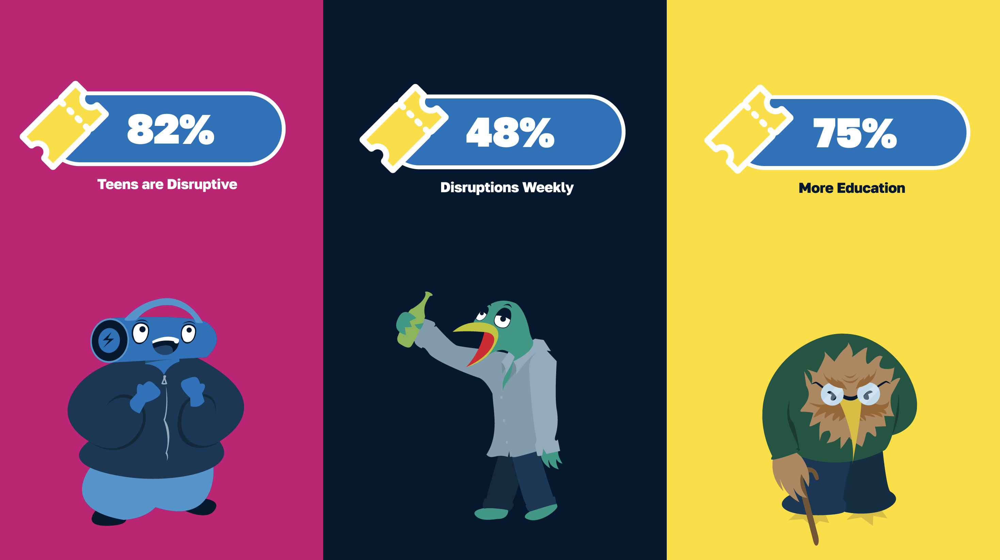
Ideation & Inspiration
looked at what we could do. I thought that making a game would be good to make the learning experience feel fun, and less of a task.
Looked at existing games, how we could approach this etc.
OPPORTUNITIES
utilize reward system
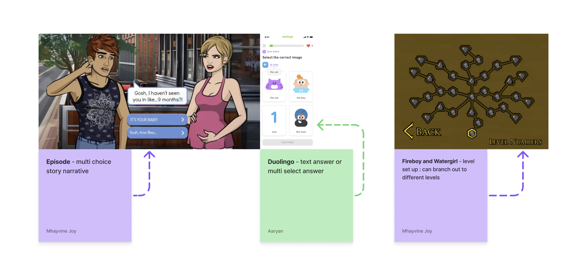
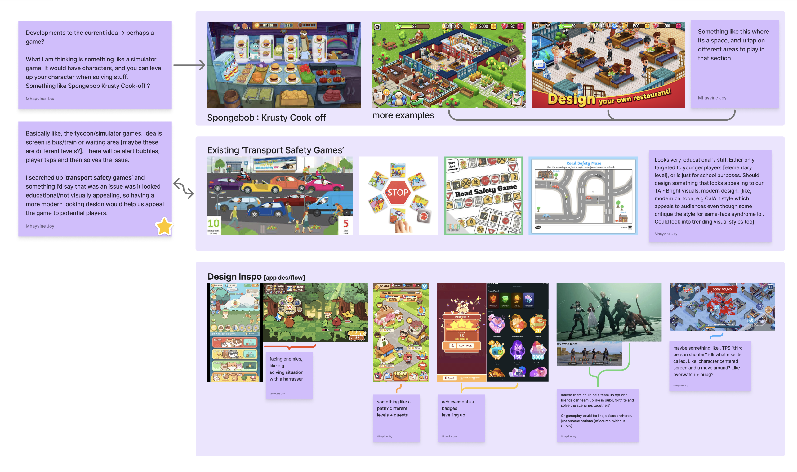
Prototyping and User Testing
I did sketches and it was good.
we then user tested this on a group of people. Our focus was seeing if it was intuitive, and looking for potential feedback on anything.
USER TESTING RESULTS
it was fun to play XD
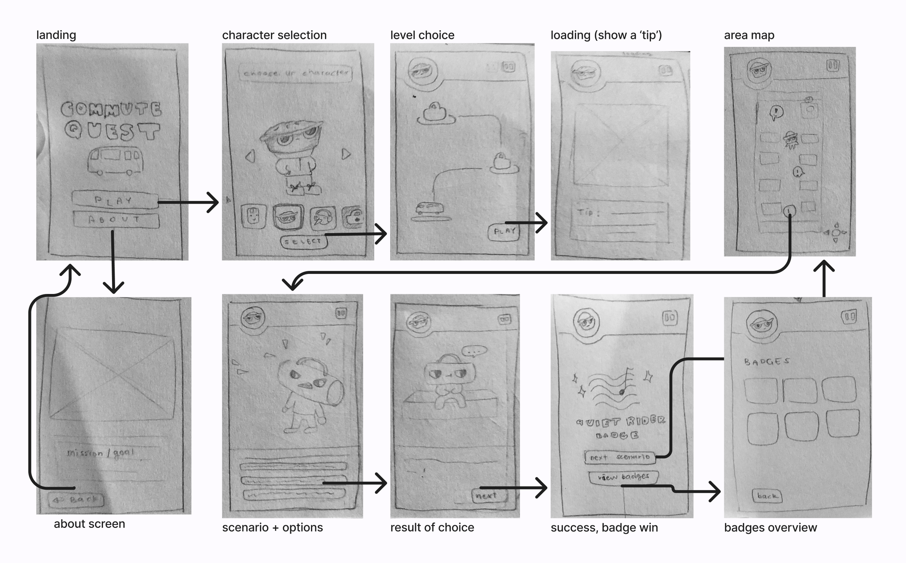
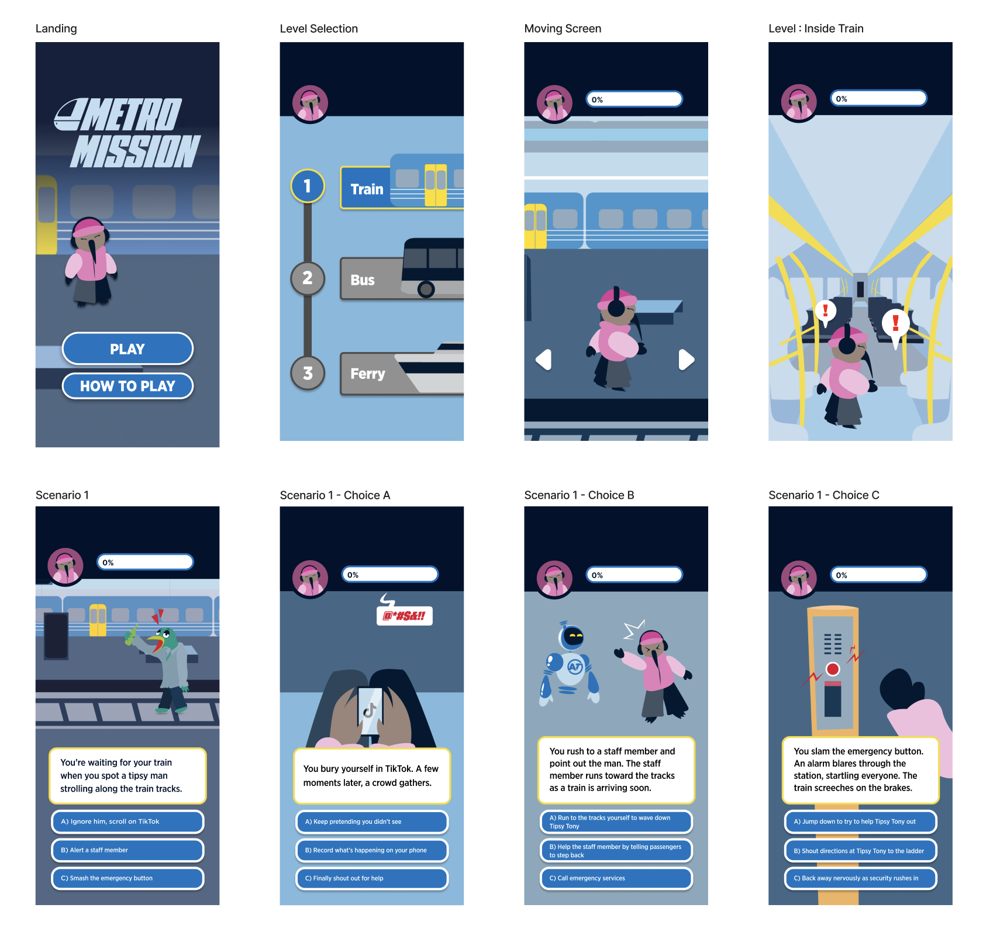
Visuals & Illustrations
As there was a lot of visuals, I helped out in the digital illustrations. We delegated characters between our graphic designer and I to turn his sketches into the digital version.
I also worked on developing the illustrations for each possible scenario branch, as well as other collateral illustrations such as the large decal stickers, collectible card sleeves, and the mini-series thumbnails.
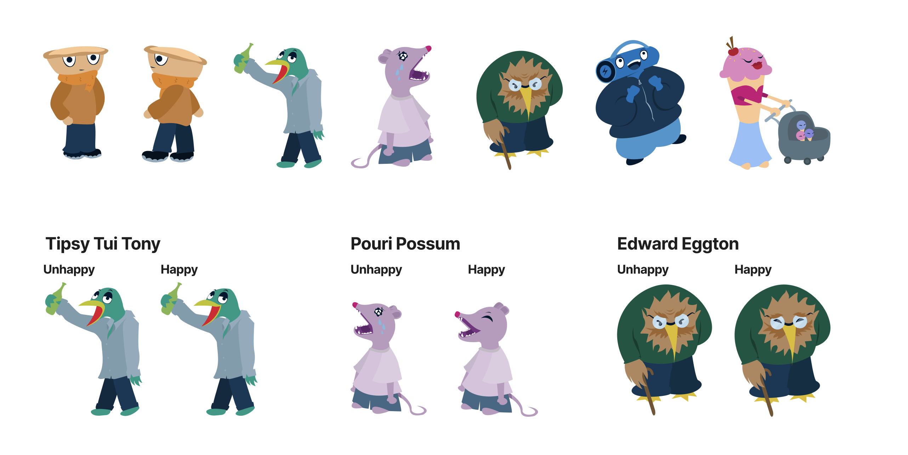
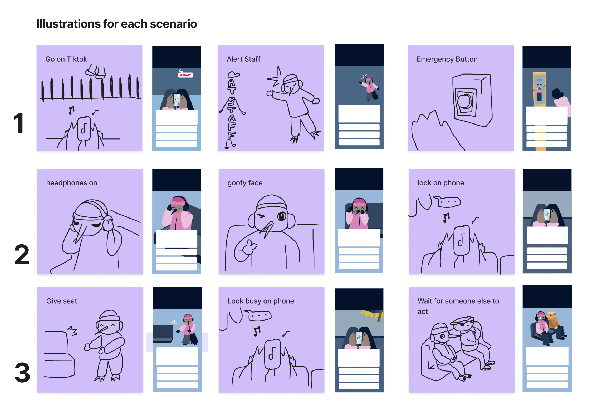
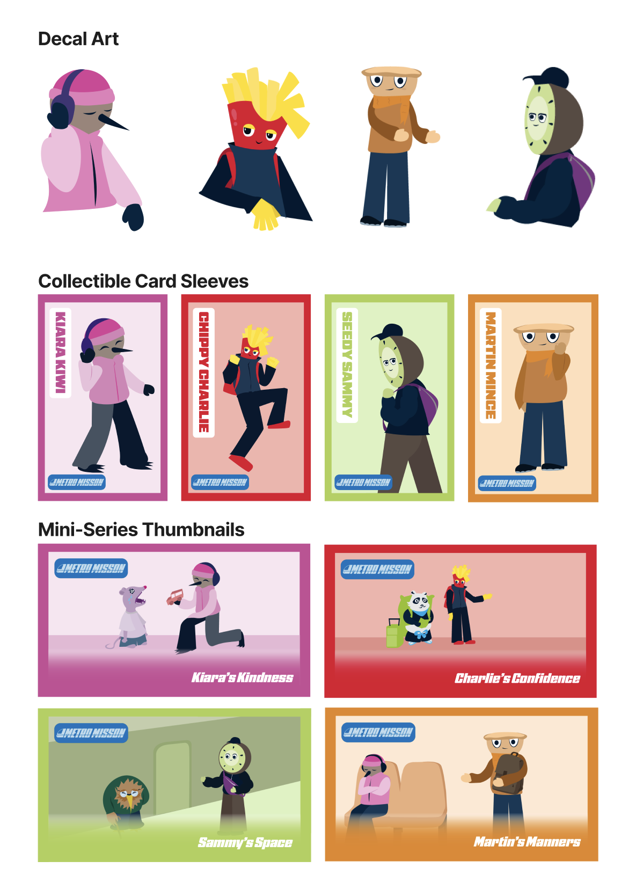
FINAL OUTCOME
Mobile Game and Campaign
the final outcome was a full fleshed campaign supporting the release of the game :D. We developed a playable game, promotional video, along with collectible card sleeves for the AT hop cards, pitched mascot school visits, and also pitched a mascot scavenger hunt for the students to complete.
Looked at existing games, how we could approach this etc.
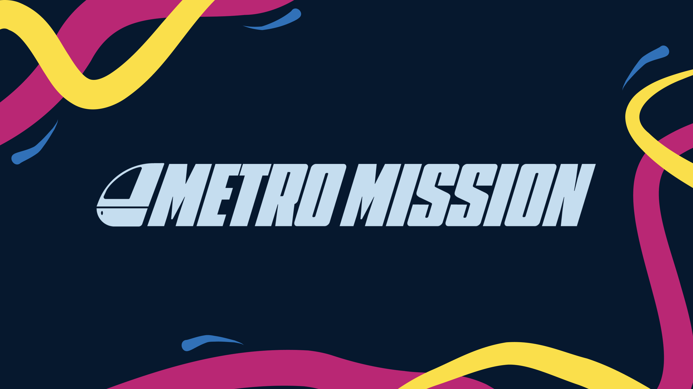
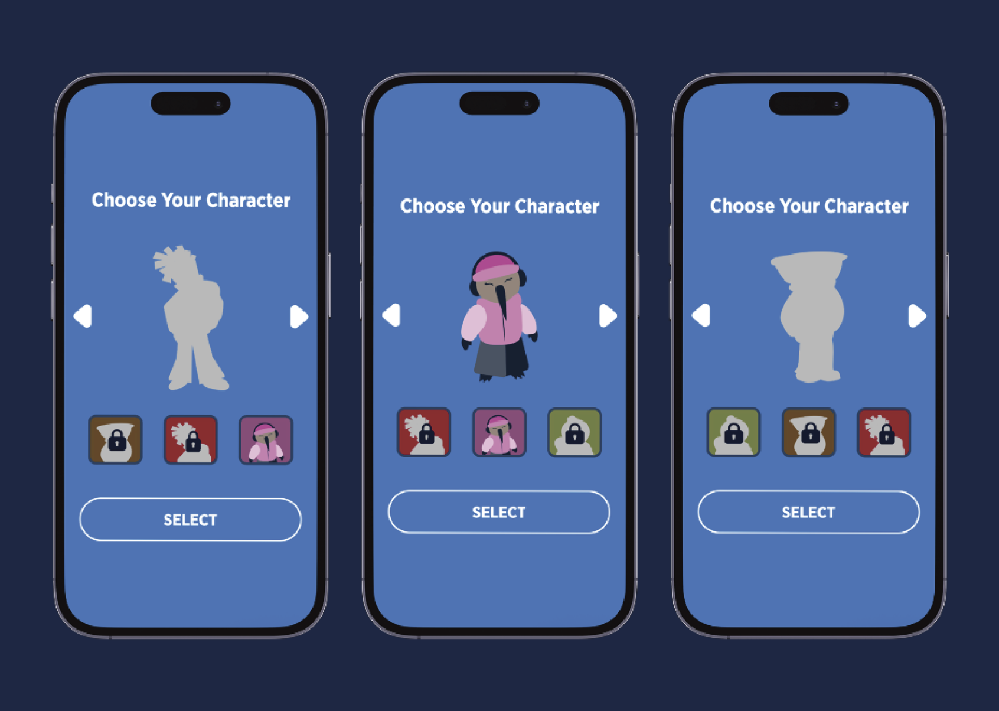
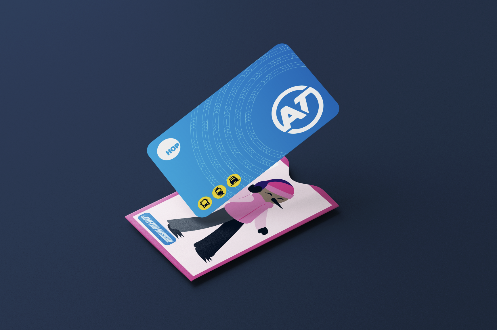


Reflection
It was a great project, great opportunities. I learnt a lot about working with others as respective disciplines, and --. It was jolly fun to present again at the Auckland Transport building to the marketing team also :D